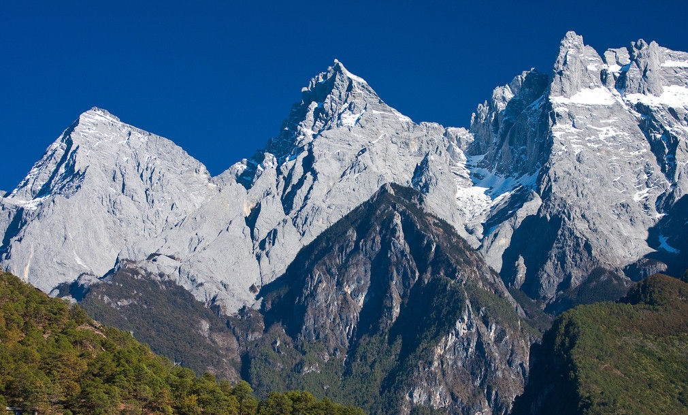

地理位置
地理位置
喜马拉雅山是世界上最高大最雄伟的山脉。它耸
立在青藏高原南缘，分布在中国西藏和巴基斯坦、印度、尼泊尔和不丹等国境内，其主要部分在中国和尼泊
尔交接处。西起青藏高原西北部的南迦帕尔巴特峰，东至雅鲁藏布江急转弯处的南迦巴瓦峰，全长2450千米，宽
200～350千米。据最新测定数据表明，珠穆朗玛峰平均每年增高1厘米。
形成历史
喜马拉雅山脉是由印澳板块与欧亚大陆板块碰撞形成的。印度板块仍在以每年大于5厘米的速度向北移动，喜马拉
雅山脉仍在不断上升中，同时还处于板块边界碰撞型地震构造带上。
据地质考察证实，早在20亿年前，喜马拉雅山脉的广大地区是一片汪洋大海，称古地中海，它经历了整个漫长的地质时期，
一直持续到3000万年前的新生代早第三纪末期，那时这个地区的地壳运动，总的趋势是连续下降，在下降过程中，海盆里堆
积了厚达30000米的海相沉积岩层。到早第三纪末期，地壳发生了一次强烈的造山运动，在地质上称为“喜马拉雅运动”，使这一
地区逐渐隆起，形成了世界上最雄伟的山脉。经地质考察证明，喜马拉雅的构造运动尚未结束，仅在第四纪冰期之后，它又升高了
1300～1500米。还在缓缓地上升之中.喜马拉雅山脉是从阿尔卑斯山脉到东南亚山脉这一连串欧亚大陆山脉的组成部分，所有这
些山脉都是在过去6500万年间由造成地壳巨大隆起的环球板块构造力形成的。
大约18000万年以前，在侏罗纪，一条深深的地槽——特提斯洋与整个欧亚大陆的南缘交界，古老的贡德瓦纳超级大陆开始解体。
贡德瓦纳的碎块之一、形成印度次大陆的岩石圈板块，在随后的13000万年间向北运动，与欧亚板块发生碰撞；印度-澳大利亚板
块逐渐将特提斯地槽局限于自身与欧亚板块之间的巨钳之内.
在其次的3000万年间，由于特提斯洋海底被向前猛冲的印-澳板块推动起来，它的较浅部分逐渐干涸；形成西藏高原。在高原的
南缘，边际山脉（外喜马拉雅山脉）成为这一地区的首要分水岭并升高到足以成为气候屏障。
地貌特征

喜马拉雅山脉最典型的特征是扶摇直上的高度，一侧陡峭参差不齐
的山峰，令人惊叹不止的山谷和高山冰川，被侵蚀作用深深切割的地形，深不可测的河流峡谷，复杂的地质构造，表现出动植物和
气候不同生态联系的系列海拔带（或区）。从南面看，喜马拉雅山脉就像是一弯硕大的新月，主光轴超出雪线之上，雪原、高山冰川
和雪崩全都向低谷冰川供水，后者从而成为大多数喜马拉雅山脉河流的源头。不过，喜马拉雅山脉的大部却在雪线之下。创造了这一
山脉的造山作用依然活跃，并有水流侵蚀和大规模的山崩。
喜马拉雅山脉可以分为4条平行的纵向的不同宽度的山带，每条山带都具鲜明的地形特征和自己的地质史。它们从南至北被命名为外
或亚喜马拉雅山脉；小或低喜马拉雅山脉；大或高喜马拉雅山脉；以及特提斯或西藏喜马拉雅山脉。
喜马拉雅山脉东西绵延2400多公里，南北宽约200～300千米，由几列大致平行的山脉组成，呈向南凸出的弧形，在中国和尼泊尔
境内是它的主干部分。平均海拔高达6000米，是世界上最雄伟的山脉。海拔7000米以上的高峰有40座，8000米以上的高峰有10座
（截止1997年，全世界8000米以上高峰仅14座），主峰珠穆朗玛峰海拔 8848.43米，为世界第一高峰。